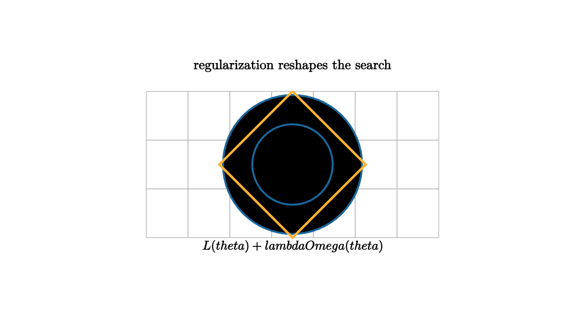

A model with too much freedom can memorize a data set. It can bend around every noisy label, chase every measurement error, and celebrate a perfect training score that fails the moment new data arrives. Regularization is how we express a preference for explanations that use their freedom carefully.
The standard form is
The loss $L$ rewards fitting the training data. The penalty $\Omega$ rewards a chosen kind of simplicity. The parameter $\lambda$ decides how much the preference matters.

source
let soft = |col, amount| lerp(WHITE, col, amount)
mesh regularization = [
center{1.35u} Text("regularization reshapes the search", 0.66),
stroke{LIGHT_GRAY, 1} LineGrid([-2, 2, 8], [-1, 1, 4], 1),
stroke{BLUE, 2.5} Circle(0.95),
stroke{BLUE, 2.5} Circle(0.55),
stroke{ORANGE, 3} Polyline([0r + 1.0u, 1.0r, 0r + 1.0d, 1.0l, 0r + 1.0u]),
center{1.12d} Tex("L(\\theta)+\\lambda\\Omega(\\theta)", 0.62)
]$L_2$ regularization, often called weight decay, uses
Geometrically, it makes large weights expensive in every direction. The optimizer can still use a large weight when the data strongly demands it, but it pays for that choice. $L_1$ regularization uses
Its diamond-shaped geometry favors sparse solutions, where some coordinates become exactly zero. This makes it useful when a small number of features should carry most of the explanation.
source
let soft = |col, amount| lerp(WHITE, col, amount)
"Fit Alone"
mesh scene = [
center{1.3u} Text("fit alone may choose a complicated curve", 0.62),
stroke{LIGHT_GRAY, 1} Line(1.7l + 0.75d, 1.7r + 0.75d),
center{1.3l + 0.25d} fill{soft(BLUE, 0.2)} stroke{BLUE, 2} Circle(0.08),
center{0.65l + 0.2u} fill{soft(BLUE, 0.2)} stroke{BLUE, 2} Circle(0.08),
center{0.05r + 0.15d} fill{soft(BLUE, 0.2)} stroke{BLUE, 2} Circle(0.08),
center{0.7r + 0.35u} fill{soft(BLUE, 0.2)} stroke{BLUE, 2} Circle(0.08),
stroke{ORANGE, 3} Polyline([1.45l + 0.25d, 1.05l + 0.45u, 0.55l + 0.15d, 0.0r + 0.35u, 0.55r + 0.05d, 1.15r + 0.45u])
]
play Write(0.9)
"Penalty"
scene = [
center{1.3u} Text("the penalty prices extra bending", 0.62),
center{0r} Tex("\\lambda \\Omega(\\theta)", 0.82),
stroke{RED, 3} Arrow(0.55l + 0.15d, 0.85l + 0.65d),
stroke{RED, 3} Arrow(0.15r + 0.25u, 0.35r + 0.75u)
]
play Trans(0.8)
"Stable Rule"
scene = [
center{1.3u} Text("the selected rule changes more gently", 0.62),
stroke{GREEN, 3} ExplicitFunc(|x| 0.25 * x + 0.05 * x * x, [-1.6, 1.6, 80]),
center{1.08d} Text("simple explanations are easier to trust", 0.62)
]
play Trans(0.8)Regularization is broader than explicit penalties. Early stopping is a kind of regularization because it limits how long the model can chase training details. Data augmentation regularizes by asking the prediction to remain stable under changes that should preserve meaning. Dropout regularizes by forcing a network to spread responsibility across features. Smoothness penalties, margin constraints, and Bayesian priors all express preferences before the final fit is chosen.
The geometric view is useful because it separates two ideas. The data creates regions of parameter space that fit well. The regularizer chooses among those regions according to a simplicity preference. With little data, the preference matters a lot. With abundant clean data, the loss can dominate.
The art is choosing the right simplicity. Small weights are helpful when many weak features should cooperate. Sparsity is helpful when a small explanatory subset is plausible. Smoothness is helpful for physical signals. Invariance is helpful for images and audio when transformations preserve meaning.
Regularization makes a model less like a student reciting memorized answers and more like a student who has learned a compact rule. The mathematics does this by adding a price to unnecessary freedom.